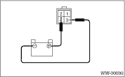
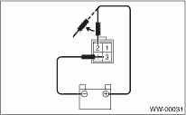
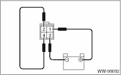

WIPER AND WASHER SYSTEMS > Rear Wiper Motor
NOTE:
When checking the wiper motor, it will be easier to check the motor operation if the wiper arm is installed.
1. Connect the battery to the wiper motor connector and confirm that wiper motor operates.

2. Connect the battery to terminals of the connector, and remove the terminal connection with motor rotating, and stop the wiper motor in mid-operation.

3. Connect the battery and confirm that the motor stops at the automatic stop position after the motor operates at low speed again.
